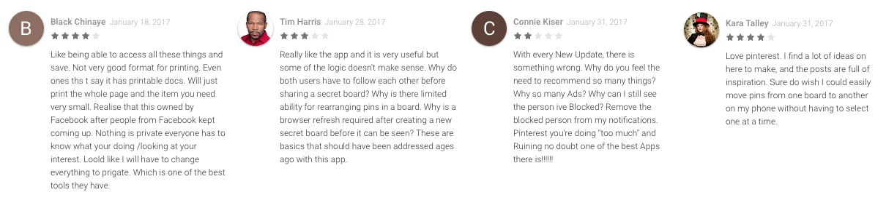

Pinterest Feature Redesign
As part of my application for KPCB Design Fellows Program, I did a user experience case study on rearranging pins on a Pinterest board. I learned about the program the day the application was due, so I challenged myself to conduct a hackathon-style UX project for the design challenge within the day.
Problem
Pins on a Pinterest board are difficult to rearrange
Time Frame
1 Day
My Role
Design strategy, user research, prototyping
Process

001. Problem Definition
I decided to work on a problem affecting Pinterest because I’m familiar with and enjoy the product. I thought it would be an interesting challenge to look at something I was familiar with from someone else’s perspective and think critically about how to change a feature.
I began by looking for user problems in the review section for the Pinterest Android app on the Google Play store. This served as a good starting point because many users contributed detailed explanations of what delighted them and what frustrated them. These four reviews stood out because they pointed out specific problems and why they were frustrated.
002. User Research
Mapping the Process
Using this Instructables video, I mapped out an example of the current process. This is a very roundabout, inefficient method that goes back and forth between screens several times.

Secondary Research
Next, I conducted research on why the feature doesn’t exist and the possibility of creating it.
Quora - Why can't I rearrange pins?- Tiling issue overrides order - sorts by oldest to newest, but also tries to make pins fit well
- Pin4Ever has a Rearrange tool (Pinterest extension)
- Can resave to same board, will appear multiple times
- Pinterest has “Rearrange pins within a board” listed as a possible future feature
- They are considering adding this feature in the future
- Many problems with this tool, which does not integrate with Pinterest, but is seperate UI
- Desktop only
- Limited features unless user pays
- Users can more easily move up to 50 pins from board to board
- This feature retains the order
003. Persona
Name
Sarah
Occupation
College student, Major: Marketing
Hobbies
Cooking, running, watching movies
Use Cases
- Looking for new recipes or previously pinned recipes
- Gathering workout ideas and tips
- Finding movies to watch with friends
Pain Points
- Sorting recipes is challenging - creating different boards for different courses results in confusion in looking for a specific recipe
- Wants to reorder workout pins in order she wants to do them to create an exercise plan
- Needs to choose between creating different boards for movie categories or people she watches them with - wishes she could do both
004. Sketches
Ideation
As I conducted research and created the persona, I wrote down ideas for solutions on sticky notes.

Considering the potential features in context of Pinterest’s existing features, creating a solution with tags and sorting would be somewhat redundant, as Pinterest already has an excellent search feature. I chose to expand on “Filling empty spaces/tiles with ads to fix tiling issue” for my sketches.
I created a user flow diagram to visualize the process a user would take to reorder pins, and how I would fix the tiling issue. I decided to minimize the amount of screens, so I stuck with one central screen that adjusts amongst states.

State 1 - Normal State

This is the regular board screen. The pins are organized so they fit in a two column grid. Users can click the edit button.
State 2 - Editing State

The regular board screen transforms into the edit state. The pins indicate that they can be moved by shaking back and forth, similar to how apps on an iOS home screen do. Users can press cancel to return to the normal state or save to save their changes. They can also rearrange the pins to the order they would like.
State 3 - Arrange State

This state is after a user has rearranged the pins. There is now an empty space due to the tiling issue. In this solution, the algorithm prefers the user’s choice of order rather than tiling.
State 4 - Saved State

This state is after a user has rearranged the pins and saved their changes. The empty space has now populated with an ad that fits perfectly in the empty space. This ad is relevant to the content on the board and flows with the existing UI, but is obviously an ad. Additionally, multiple ads can populate the same space if needed.
005. Conclusion
I began with the problem that pins on a Pinterest board are difficult to rearrange. Through my research, I found that one potential reason Pinterest has not implemented this feature is a tiling issue - the code currently prioritizes fitting by tile length.
I addressed the problem using user flows and sketches to visualize a one-screen process. In this process, a user can click edit on a board page and rearrange the pins. The empty spaces are auto-populated with ads.
I would like to have conducted user testing, but unfortunately, as it was late in the night, everyone was asleep. I plan to test my sketches later on to find out what my design communicates to users and iterate on it, then expand this case study.
I am always looking for feedback - it helps me think critically and grow as a designer. Have questions or comments? Feel free to shoot me an email at rheamanocha5@gmail.com.